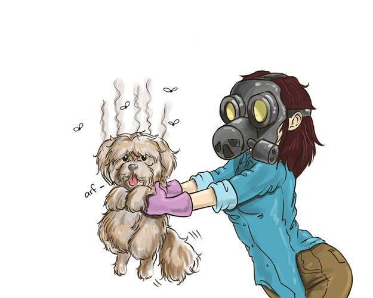

Породы собак, которые не пахнут
Собираясь впервые завести собаку, многие пытаются найти породы собак, которые не пахнут. Разберёмся, какие породы можно считать менее "запашистыми" и что ещё, кроме породы, влияет на появление специфического запаха «псины».
Какие же породы не пахнут
Говорить о том, что существуют породы собак, которые не пахнут, можно только условно, с учётом прочих факторов, речь о которых пойдёт ниже. Тем не менее есть породы, которые пахнут заведомо меньше своих собратьев. К ним следует отнести:
- голые породы. Самые распространённые из них - китайская хохлатая собака и мексиканская голая собака. У них практически нет шерсти, а значит, практически нет запаха, связанного именно с шерстью. Помимо удовольствия обладания «беззапаховой» собакой, владение собакой любой из голых пород влечёт за собой достаточно трудоёмкий и непривычный уход за кожей, в том числе эпиляцию либо депиляцию, использование кремов, включая крема c UF-фильтрами, обязательное ношение одежды;
- собаки с длинной шерстью без подшёрстка, из которых самая известная порода – йоркширский терьер. Структура шерсти более всего напоминает человеческие волосы, а не шесть, а значит, имеет и соответствующие особенности: лишена типично собачьего запаха, но легко впитывает окружающие собаку запахи, требует мытья приблизительно раз в неделю с использованием кондиционеров и тщательной сушкой;
- породы с короткой жесткой шерстью без подшёрстка. Жёсткая ость практически не намокает и с трудом впитывает запахи, а потому такие собаки практически не пахнут. Если собака ещё и некрупной породы - запах от неё практически не заметен. Перечислять породы можно долго, но к примеру: керн-терьерa, вест-хайленд-уайт-терьер;
- пудель. У пуделя есть подшёрсток (который – обычно - как раз и пахнет), но сохранять славу породы собак, которые не пахнут, пуделю помогает тщательный уход за шерстью и регулярное мытьё.
Таким образом, выбирая одну из пород, которые принято причислять к «условно беззапаховым», следует помнить об особенностях ухода за такой собакой и быть к такому уходу готовым.
Статья полностью...">